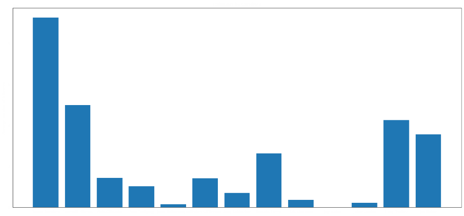
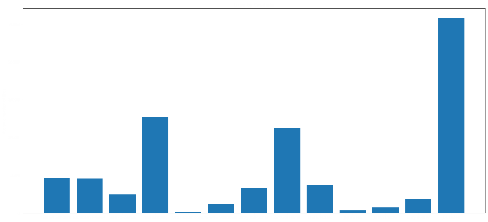

Market Buddy is a progressive web app (PWA) that my team and I created as a final project for User Experience and Software Development Studio class.
Our goal was to create a PWA for the local farmer's market by choosing a problem to target based on interviews. The problem we tackled through our app
was people's lack of reliable transportation. We drew out several prototypes and solutions, and decided to choose an approach that would accompany
users through the whole process of a trip to the farmer's market.
Market Buddy prompts users to pick a date to go to the farmer's market, as well as the reasons they're going. Once a user creates their trip, Market Buddy
stores that information and when the day the user chose draws near, the user will receive a notification as a reminder. Market Buddy also uses geolocation
to confirm whether or not a user visited the farmer's market, or will ask the user whether or not they went. If they did, they recevice a badge and accumulate points.
We ran several user tests each step of the prototyping and implementation process, each one helping us with small details we may have missed. We included the points
system so users would have some gamification to motivate them. Market Buddy was implemented using Vue.js, Semantic Vue, Javascript, HTML, CSS, and JSON.
Market Buddy can be accessed here.
Mala Silvarum is a very simple text-based game that I created as a project for a computer science class using C++.
The first step I took to create my game, Mala Silvarum, was come up with a path-and-choice-based story that would
provide more than one way to get a game over, but only one way to access the game’s ending. To track my story in a clean,
interactive way, I used Twine, as shown in the picture.
Mala Silvarum involved overloading operators, creating files, and implementing a way for users to unlock an "Extras" choice
on the main menu in such a simple game.
Mala Silvarum can be downloaded here
I have analyzed and visualized data collected in large amounts, whether it be for class or small personal projects.
A small team and I analyzed presidential candidates' Twitter statistics in 2019 and compared our findings to popularity polls
at the time. The following are some of the numbers that we looked at and compared. This involved scraping candidates' tweet
statistics using tweepy, then analyzing everything we compiled

